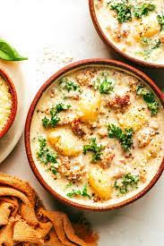

Zuppa Toscana Soup

Description
This recipe is a copy cat for the beloved
Olive Garden special. Best served with a
side of crusty bread!
Ingredients
- Chicken stock
- Hot italian pork sausage
- Potatoes --Yukon gold or whatever
your perference
- Yellow onion
- Garlic
- Heavy cream/half and half/milk
- Parmesan cheese
- Kale
- Bacon bits (optional)
Steps
- Wash and dry produce.
Dice onion and mince garlic.
Quarter potatoes.
Remove kale from stems and tear/chop into
bite sized pieces.
- In a large pot, cook sausage until browned.
Remove from pot, drain fat and set aside.
- Add onion to pot and cook on medium week until
semi-translucent. Add garlic and stir until fragrant,
about 1 minute.
- Add stock to the pot and bring to a boil. Once
boiling, add potatoes and bring back to a low boil
until potatoes are tender.
- Add cooked sausage, kale, and bacon bits if using
to the pot. Lower to a simmer for a few minutes.
- Turn off heat and ladle in bowls. Top off with cream or milk
to your liking. Enjoy!